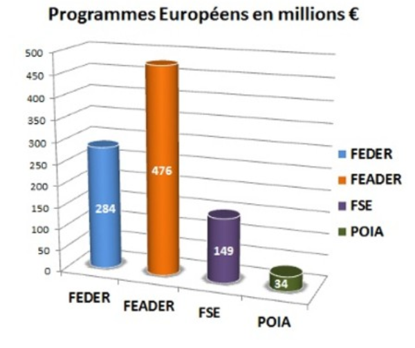

Du fait de sa position géographique, la région Provence-Alpes-Côte-d'Azur est très impliquée dans la coopération territoriale européenne. Pour la période 2014-2020, elle participe à 4 programmes de coopération. Autant d’opportunités pour les porteurs de projets régionaux de financer leurs actions.
Les propositions de règlements européens pour la période 2014-2020 ont pour double objectif de mettre les Fonds européens au service de la Stratégie Europe 2020 pour une croissance intelligente, durable et inclusive, et de rendre leur action plus efficace. L'ensemble du processus de préparation et de mise en oeuvre des politiques européennes pour la période 2014-2020 est régi par le principe de partenariat et de gouvernance multi-niveaux. La Région Provence-Alpes-Côte d'Azur prépare activement cette nouvelle programmation.
L'Union européenne ne gère pas directement les fonds européens : elle délègue cette gestion à ses Etats membres ou à leur collectivités territoriales. En France, l'Etat a décidé de transférer aux Régions la gestion des fonds européens qu'il assurait auparavant*. Cela permet une meilleure proximité avec les citoyens et leur besoins. *Transfert confirmé par la loi de 2014 de modernisation de l'action publique territoriale et d'affirmation des métropoles (loi MAPTAM)
Pour la période 2014-2020, la Région Provence-Alpes-Côte d'Azur gère près de 950 millions d'euros de fonds européens :
-284 millions d'euros pour le Programme Opérationnel Régional FEDER
-149 millions d'euros pour le Programme Opérationnel Régional FSE
-476 millions d'euros pour le Programme de Développement Rural Régional (FEADER)
-34 millions d'euros pour le Programme Interrégional du Massif des Alpes (POIA-FEDER)